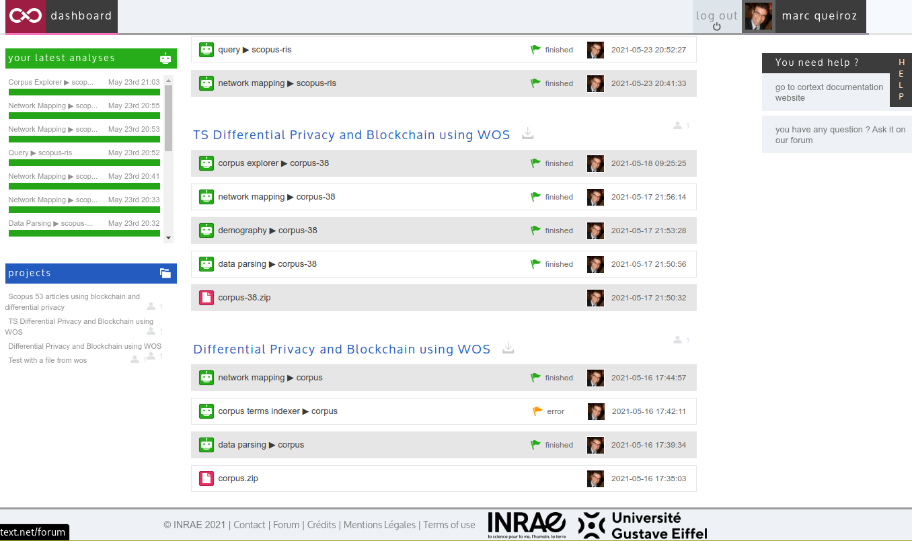
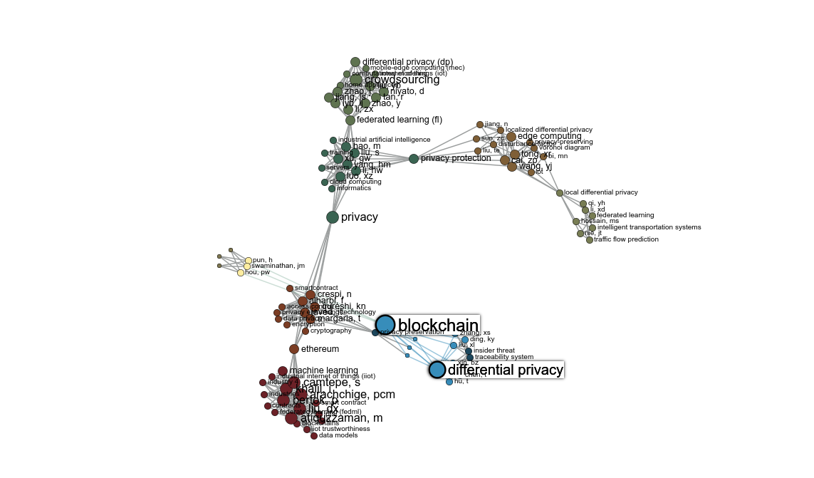
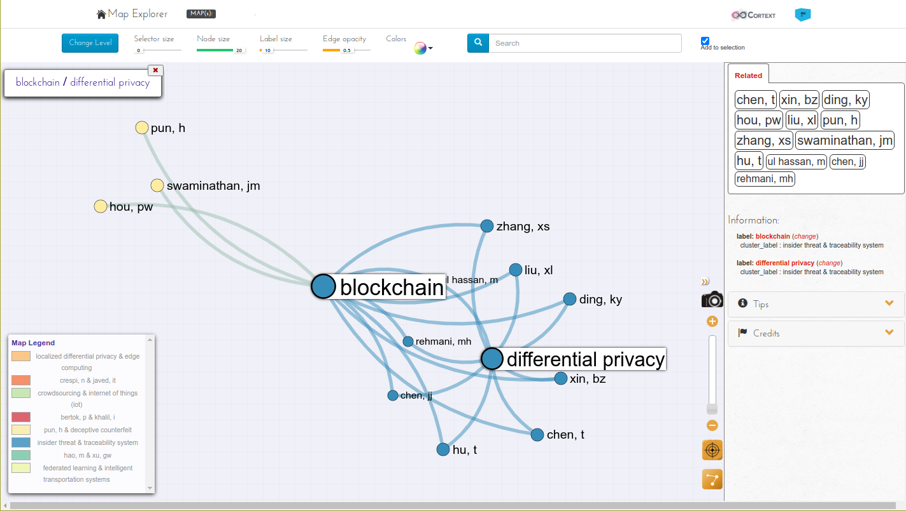
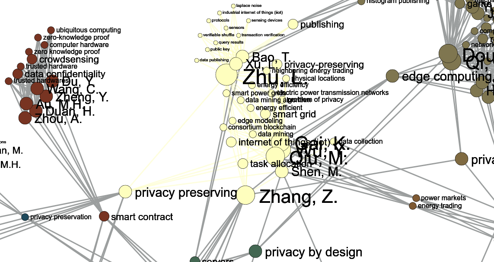
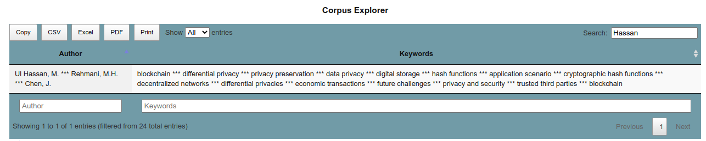
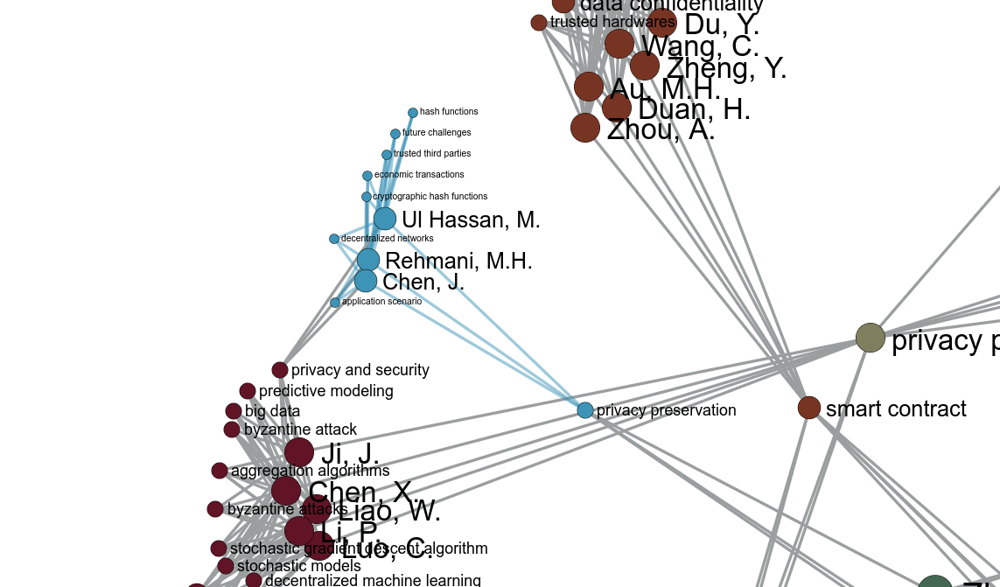

name: inverse layout: true class: center, middle, inverse --- # Apresentação do Projeto Título provisório ## Blockchain-based Privacy-preserving for data sharing using Federated Learning .footnote[ This presentation: https://marc-queiroz.github.io/unifil/doctoral-project/slides/latest/index.html [Overleaf - Blockchain-based Privacy-preserving for data sharing using Federated Learning](https://www.overleaf.com/read/hdjxghrkypqd) ] --- layout: false class: inverse, middle .left-column[ ## Hassan et al. 2020 ] .right-column[ Journal Paper: Differential privacy in blockchain technology: A futuristic approach - Future applications of differential privacy in blockchain .footnote[HASSAN, M. U.; REHMANI, M. H.; CHEN, J. Differential privacy in blockchain technology: A futuristic approach.Journal of Parallel and Distributed Computing] ] --- layout: false class: inverse, middle .left-column[ ## Methology used to find a research theme ] .right-column[ - Citation Maps - Term search .footnote[ FELIZARDO, K. R. et al. Using visual text mining to support the study selection activity in systematic literature reviews GUESSI, M. et al. A systematic literature review on the description of software architectures for systems of systems MENDES, E. et al. When to update systematic literature reviews in software engineering ] ] --- layout: false class: inverse, middle .left-column[ ## Base of knowledge ] .right-column[ - The two main bibliographic databases DBs, can be accessed by Capes Portal - WoS, Web of Science from Clarivate Analytics - Scopus from Elsevier .footnote[ PRANCKUTÈ, R. Web of science (wos) and scopus: The titans of bibliographicinformation in today’s academic world ] ] --- layout: false class: inverse, middle .left-column[ Search string ] .right-column[ - Search string used at WoS to generate a corpus-based study - TS=("blockchain" and "differential privacy") .footnote[ ] ] --- layout: false class: inverse, middle .left-column[ Cortext a bibliographic tool ] .right-column[ - Cortext: Data analysis platform for citizens and researchers - Manager: https://managerv2.cortext.net/ - Docs: https://docs.cortext.net/ .footnote[ ] ] --- layout: false class: inverse, middle .left-column[ Dashboard example ] .right-column[  .footnote[ ] ] --- layout: false class: inverse, middle .left-column[ Map explorer example ] .right-column[  .footnote[ ] ] --- layout: false class: inverse, middle .left-column[ Map explorer example ] .right-column[  .footnote[ ] ] --- layout: false class: inverse, middle .left-column[ Discussion ] .right-column[ <!--Find authors that are related by key terms--> Based on the corpus constructed on your search using WoS or Scopus, the tool can show a network of relations between the articles and the authors. Find who are the relevant authors from WoS and Scopus corpus. .footnote[ Prof. Gai, K. profile: https://cs.bit.edu.cn/szdw/jsml/fjs/gkk_20180621115652294038/index.htm ] ] --- layout: false class: inverse, middle .left-column[ Exploring ] .right-column[ Example: Who are the authors related to Gai, K? .footnote[ ] ] --- layout: false class: inverse, middle .left-column[ Exploring ] .right-column[ <img width="780px" src="./imagem06.png"/> .footnote[ Prof. Zhu, L. profile: https://cs.bit.edu.cn/szdw/jsml/js/zlh/index.htm ] ] --- layout: false class: inverse, middle .left-column[ Cluster ] .right-column[  .footnote[ ] ] --- layout: false class: inverse, middle .left-column[ ## Ul Hassan, M ] .right-column[  .footnote[ Prof. Ul Hassan, M.: https://www.muneebulhassan.com/ ] ] --- layout: false class: inverse, middle .left-column[ ## Cluster ] .right-column[  .footnote[ ] ] --- layout: false class: inverse, middle .left-column[ Discussion ] .right-column[ - Differential privacy (DP) can protect the personal data, but can reduce the utility of the information. - Find the balance between the noise addition and usefulness is the key. .footnote[ ] ] --- layout: false class: inverse, middle .left-column[ Blockchain Architecture ] .right-column[ .footnote[ WU, J.; TRAN, N. K. Application of blockchain technology in sustainableenergy systems: An overview. ] ] --- layout: false class: inverse, middle .left-column[ Healthcare 4.0 ] .right-column[ - Disease diagnoses using machine learning algorithms - Healthcare systems - IoT systems .footnote[ CHEN, X.; WANG, X.; YANG, K. Asynchronous Blockchain-based Privacy-preserving Training Framework for Disease Diagnosis. ] ] --- layout: false class: inverse, middle .left-column[ Federated Learning (FL) and DP ] .right-column[ ``...enables specialists to analyze and utilize the locally generated data in a decentralized way without requiring uploading data to a centralized server...'' - New normalization technique was used on extracted features .footnote[ ZHAO, Y. et al.Privacy-Preserving Blockchain-Based Federated Learning forIoT Devices. ] ] --- layout: false class: inverse, middle .left-column[ Genetic Privacy or Quantitative Genetics ] .right-column[ Challenges, apply DP keeping the data useful for research. Applications on medical research and agronomics. .footnote[ WEI, J. et al. Differential Privacy-based Genetic Matching in PersonalizedMedicine. ] ] --- layout: false class: inverse, middle .left-column[ Research Opportunities ] .right-column[ In case of healthcare systems, enabling individual hospitals to collaborate and share patient data to research the diagnostic of illness using machine learning algorithms. genetic privacy, enabling a safe distributed environment capable to provide a federated learning. Use cases for agricultural genetics, when is necessary share information without disclosing protected information. .footnote[ ] ] --- layout: false class: inverse, middle .left-column[ ] .right-column[ .footnote[ ] ] --- layout: false class: inverse, middle .left-column[ ## Hassan et al. 2020 ] .right-column[ - 6.1.2 Smart Healthcare systems, volume of data extracted that could help doctors to examine, investigate, and judge any specific medical condition even from a distant place. - Create a network of collaboration to improve diagnostic of illness using federated machine learning. To protect the PII from the patient, is proposed to apply a mechanism of DP. ] --- layout: false class:inverse,center,middle # FIM